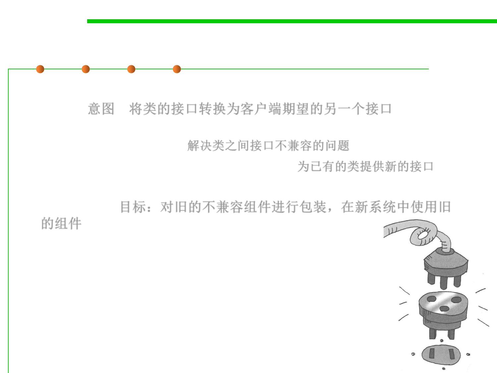
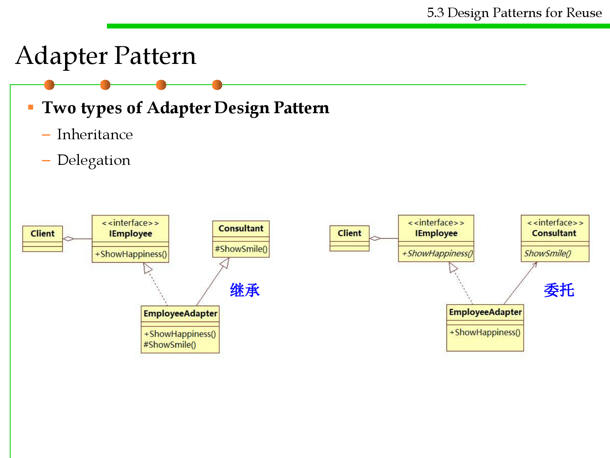
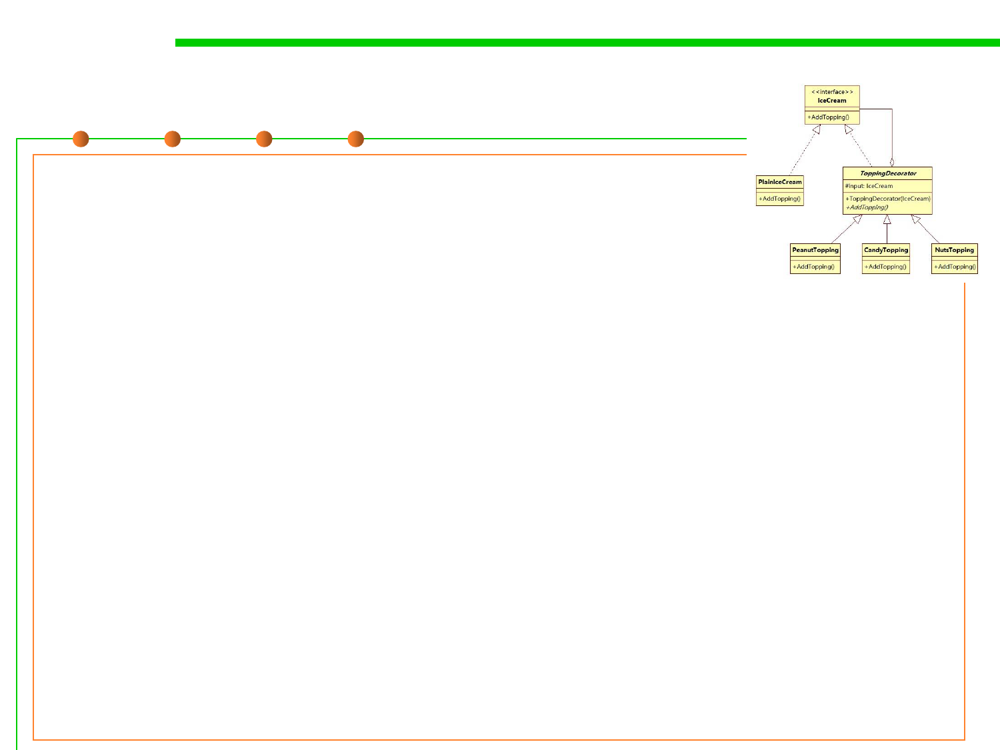
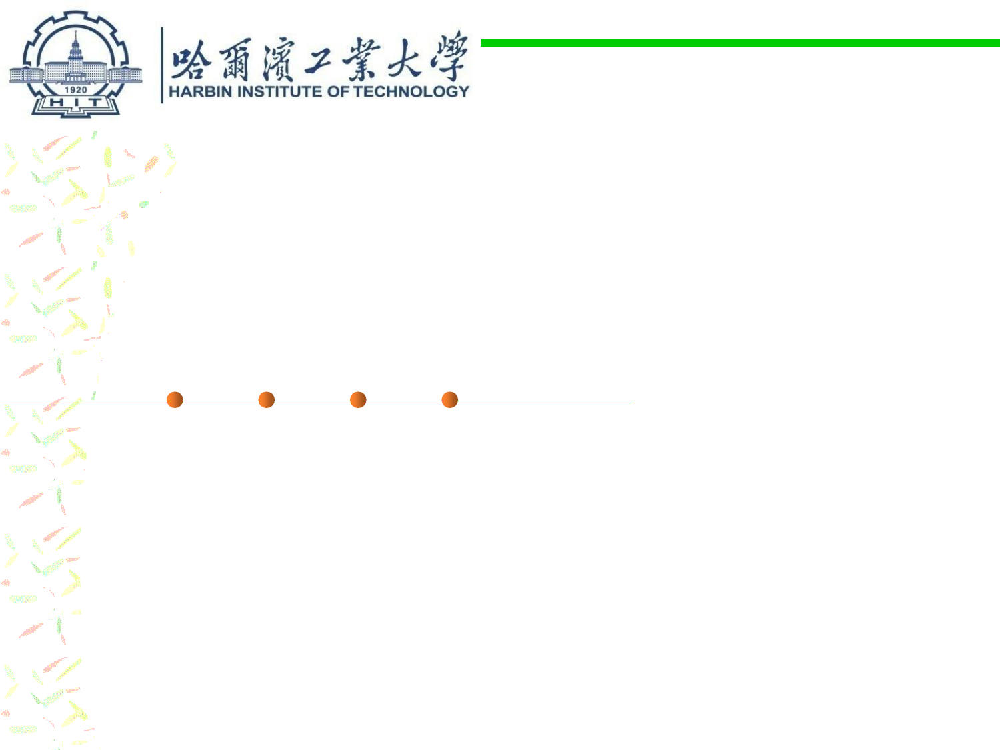
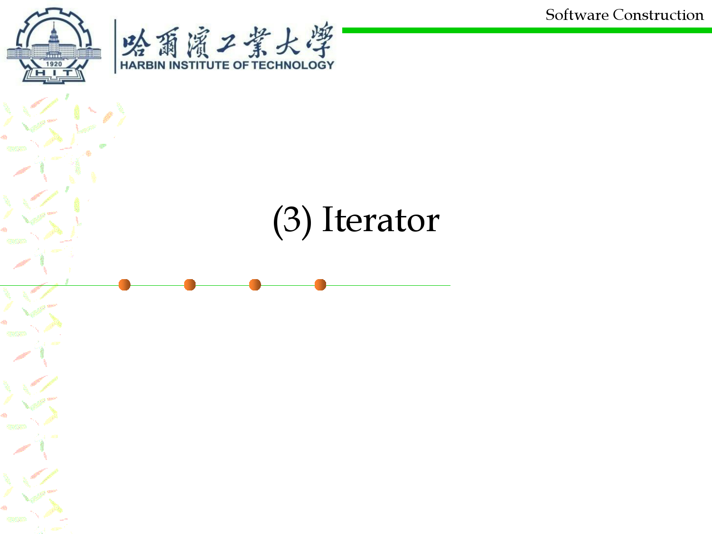
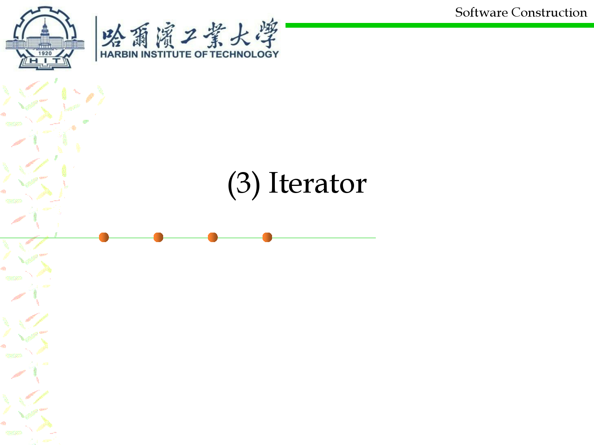
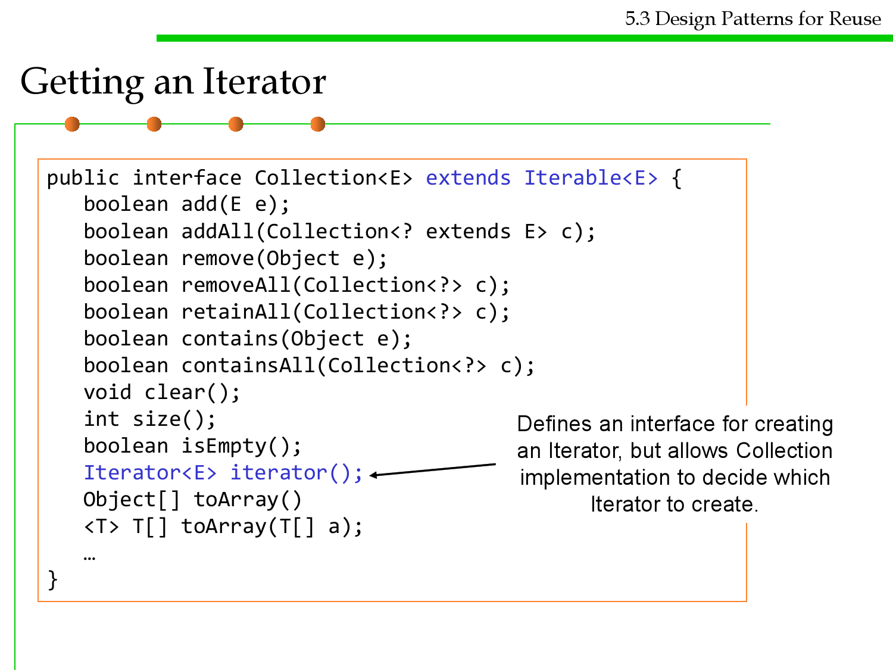

微信公众号[深容Pubmed文献检索] 1. 此处右键：选菜单【翻成中文（简体）】 2. 翻译后，此处右键：选菜单【打印...】成PDF格式
建议屏幕分辨率：1920X1080；如果屏幕太小，可以按Ctrl + 或 Ctrl -缩放网页。

Software Construction
Chapter 5: Reusability-Oriented Software
Construction Approaches
5.3 Design Patterns for Reuse
Xu Hanchuan
xhc@hit.edu.cn
April 14, 2019

Outline
5.3 Design Patterns for Reuse
▪ Structural patterns
– Adapter allows classes with incompatible interfaces to work together by
wrapping its own interface around that of an already existing class.
– Decorator dynamically adds/overrides behavior in an existing method of
an object.
– Facade provides a simplified interface to a large body of code.
▪ Behavioral patterns
– Strategy allows one of a family of algorithms to be selected on-the-fly at
runtime.
– Template method defines the skeleton of an algorithm as an abstract class,
allowing its subclasses to provide concrete behavior.
– Iterator accesses the elements of an object sequentially without exposing
its underlying representation.
Recall: Why reusable Designs?
5.3 Design Patterns for Reuse
A design…
…enables flexibility to change (reusability) 灵活的改变
…minimizes the introduction of new problems when fixing old ones
(maintainability) 易于修复
…allows the delivery of more functionality after an initial delivery
(extensibility) 易于增加新功能

Gang of Four
▪ Design Patterns: Elements of Reusable
Object-Oriented Software
▪ By GoF (Gang of Four)
– Erich Gamma
– Richard Helm
– Ralph Johnson
– John Vlissides
5.3 Design Patterns for Reuse
《图解设计模式》
《Head First 设计模式》

Design patterns taxonomy
5.3 Design Patterns for Reuse
▪ Creational patterns
– Concern the process of object creation 如何创建对象
▪ Structural patterns
– Deal with the composition of classes or objects 如何组合类和对象
▪ Behavioral patterns
– Characterize the ways in which classes or objects interact and distribute
responsibility. 如何交互和分配责任

Software Construction
1 Structural patterns
Software Construction
(1) Adapter
加个“适配器”以便于复用

Adapter Pattern 适配器模式
5.3 Design Patterns for Reuse
▪ Intent: Convert the interface of a class into another interface clients
expect. 意图：将类的接口转换为客户端期望的另一个接口
– Adapter lets classes work together that couldn‘t otherwise because of
incompatible interfaces. 解决类之间接口不兼容的问题
– Wrap an existing class with a new interface. 为已有的类提供新的接口
▪ Objective: to reuse an old component to a new system (also called
“wrapper”) 目标：对旧的不兼容组件进行包装，在新系统中使用旧
的组件
▪ 加个“适配器”以便于复用

Adapter Pattern 适配器模式
5.3 Design Patterns for Reuse
实现
继承
Example
5.3 Design Patterns for Reuse
▪ The Adaptee is the existing class.
▪ The ITarget is the interface defined in the existing library.
▪ The Adapter is the class that you create, it is inherited from the
adaptee class and it implements the ITarget interface. Notice that it
can call the SpecificRequest method(inherited from the adaptee)
inside its request method(implemented by the ITarget).
实现
继承

Example
5.3 Design Patterns for Reuse
▪ An organization tree that is constructed where all the employees
implements the IEmployee interface. The IEmployee interface has a
method named ShowHappiness().
▪ We need to plug an existing Consultant class into the organization
tree. The Consultant class is the adaptee which has a method named
ShowSmile().
▪ This incongruity can be reconciled by adding an additional level of
indirection – i.e. an Adapter object. 通过增加额外的间接层来解决不
协调/不兼容的问题

Example
5.3 Design Patterns for Reuse
public class Consultant { //已存在的类
private String name;
public Consultant(String name) {
this.name = name;
}
protected void ShowSmile() {
System.out.println("Consultant " + this.name + " showed
smile");
}
}
public interface IEmployee {//目标接口
void ShowHappiness();
}

Example
5.3 Design Patterns for Reuse
public class EmployeeAdapter extends Consultant implements
IEmployee { //Adapter
public EmployeeAdapter(String name){
super(name);
}
@Override
public void ShowHappiness() {
ShowSmile(); // call the parent Consultant class
}
}
public class Client {
public static void main(String[] args){
IEmployee em = new EmployeeAdapter("Bruno");
em.ShowHappiness();
}
}
Result: Consultant Bruno showed smile

Adapter Pattern
▪ Two types of Adapter Design Pattern
– Inheritance
– Delegation
5.3 Design Patterns for Reuse
继承
委托
Software Construction
(2) Decorator
装饰边框与被装饰物的一致性

5.3 Design Patterns for Reuse
Motivating example of Decorator pattern
▪ Suppose you want various extensions of a Stack data structure…
– UndoStack: A stack that lets you undo previous push or pop operations
– SecureStack: A stack that requires a password
– SynchronizedStack: A stack that serializes concurrent
accesses
Inheritance
▪ And arbitrarily composable extensions:
– SecureUndoStack: A stack that requires a password, and also lets you
undo previous operations
– SynchronizedUndoStack: A stack that serializes concurrent accesses, and
also lets you undo previous operations
– SecureSynchronizedStack: …
– SecureSynchronizedUndoStack: …
Inheritance
hierarchies?
Multi-Inheritance?

Decorator 装饰器模式
5.3 Design Patterns for Reuse
▪ Problem: You need arbitrary or dynamically composable extensions
to individual objects. 问题: 需要对对象进行任意或者动态的扩展组合
▪ Solution: Implement a common interface as the object you are
extending, add functionality, but delegate primary responsibility to
an underlying object. 方案: 实现一个通用接口作为要扩展的对象，将
主要功能委托给基础对象(stack)，然后添加功能(undo,secure,..)。
▪ It works in a recursive way. 以递归的方式实现
▪ Consequences:
– More flexible than static inheritance Customizable, cohesive extensions
▪ Decorators use both subtyping and delegation
▪ 装饰边框与被装饰物的一致性
Decorator
5.3 Design Patterns for Reuse
▪ The Component interface defines the operation, or the features that
the decorators can perform. 接口：定义装饰物执行的公共操作
▪ The ConcreteComponent class is the starting object that you can
dynamically add features to. You will create this object first and add
features to it. 起始对象，在其基础上增加功能(装饰)，将通用的方法放
到此对象中。

Decorator
5.3 Design Patterns for Reuse
▪ The Decorator class is an abstract class and is the parent class of all
the decorators. While it implements the Component interface to
define the operations, it also contains a protected
variable component that points to the object to be decorated.
The component variable is simply assigned in the constructor.
Decorator抽象类是所有装饰类的基类，里面包含的成员变量
component 指向了被装饰的对象。
▪ The constructor for the Decorator class is simply:
public Decorator(Component input)
{
this.component = input;
}
Decorator
5.3 Design Patterns for Reuse
▪ The ConcreteDecorator class are the actual decorator classes that
can add features. You can have as many ConcreteDecorator class as
you like, and each will represent a feature that can be added.

Example
5.3 Design Patterns for Reuse
▪ In this example we have a plain ice cream where you can add
different combination of toppings to it.
在构造方法中，指
定input的值(被装
饰的IceCream的具
体类型)

5.3 Design Patterns for Reuse
Example
public interface IceCream { //顶层接口
void AddTopping();
}
public class PlainIceCream implements IceCream{ //基础实现，无填加的冰激凌
@Override
public void AddTopping() {
System.out.println("Plain IceCream ready for some
toppings!");
}
}
/*装饰器基类*/
public abstract class ToppingDecorator implements IceCream{
protected IceCream input;
public ToppingDecorator(IceCream i){
this.input = i;
}
public abstract void AddTopping(); //留给具体装饰器实现
}

Example
5.3 Design Patterns for Reuse
public class CandyTopping extends ToppingDecorator{
public CandyTopping(IceCream i) {
super(i);
}
public void AddTopping() {
input.AddTopping(); //decorate others first
System.out.println("Candy Topping added！");
}
}
public class NutsTopping extends ToppingDecorator{
//similar to CandyTopping
}
public class PeanutTopping extends ToppingDecorator{
//similar to CandyTopping
}
Another Example
5.3 Design Patterns for Reuse
public class Client {
public static void main(String[] args) {
IceCream a = new PlainIceCream();
IceCream b = new CandyTopping(a);
IceCream c = new PeanutTopping(b);
IceCream d = new NutsTopping(c);
d.AddTopping();
//or
IceCream toppingIceCream =
new NutsTopping(
new PeanutTopping(
new CandyTopping(
new PlainIceCream()
)
)
The result:
);
Plain IceCream ready for some toppings!
}
toppingIceCream.AddTopping();
Candy Topping added！
Peanut Topping added！
Nuts Topping added！

Example2
5.3 Design Patterns for Reuse
▪ To construct a plain stack:
– Stack s = new ArrayStack();
▪ To construct an undo stack:
– UndoStack s = new UndoStack(new ArrayStack());
▪ To construct a secure synchronized undo stack:
– SecureStack s = new SecureStack(
new SynchronizedStack(
new UndoStack(new ArrayStack()))
▪ Flexibly Composible!

Decorator vs. Inheritance
5.3 Design Patterns for Reuse
▪ Decorator composes features at run time
– Inheritance composes features at compile time
▪ Decorator consists of multiple collaborating objects
– Inheritance produces a single, clearly-typed object
▪ Can mix and match multiple decorations
– Multiple inheritance is conceptually difficult

5.3 Design Patterns for Reuse
Decorators from java.util.Collections
▪ Turn a mutable list into an immutable list:
– static List<T> unmodifiableList(List<T> lst);
– static Set<T> unmodifiableSet( Set<T> set);
– static Map<K,V> unmodifiableMap( Map<K,V> map);
▪ Similar for synchronization:
– static List<T> synchronizedList(List<T> lst);
– static Set<T> synchronizedSet( Set<T> set);
– static Map<K,V> synchronizedMap( Map<K,V> map);

Software Construction
(3) Façade
简单窗口

Façade [fəˈsɑːd] 外观模式
5.3 Design Patterns for Reuse
▪ Problem
– A segment of the client community needs a simplified interface to the
overall functionality of a complex subsystem. 调用者需要一个简化的接口
来调用复杂系统的整体功能。
▪ Intent
– Provide a unified interface to a set of interfaces in a subsystem. Facade
defines a higher-level interface that makes the subsystem easier to use. 提
供更高层次的接口来使子系统易于使用。
– Wrap a complicated subsystem with a simpler interface.
▪ This reduces the learning curve necessary to successfully leverage
the subsystem.
▪ It also promotes decoupling the subsystem from its potentially
many clients.
▪ 简单窗口
Facade
5.3 Design Patterns for Reuse

Software Construction
2 Behavioral patterns

Software Construction
(1) Strategy
整体地替换算法

Strategy Pattern
5.3 Design Patterns for Reuse
▪ Problem: Different algorithms exists for a specific task, but client can
switch between the algorithms at run time in terms of dynamic
context. 针对特定任务存在多种算法，调用者需要根据上下文环境动
态的选择和切换。
▪ Example: Sorting a list of customers (Bubble sort, mergesort,
quicksort)
▪ Solution: Create an interface for the algorithm, with an
implementing class for each variant of the algorithm. 定义一个算法的
接口，每个算法用一个类来实现，客户端针对接口编写程序。
▪ Advantage:
– Easily extensible for new algorithm implementations
– Separates algorithm from client context
▪ 整体地替换算法
Strategy Pattern
5.3 Design Patterns for Reuse
Code example
5.3 Design Patterns for Reuse

Code example
5.3 Design Patterns for Reuse
public interface PaymentStrategy {
public void pay(int amount);
}
public class CreditCardStrategy implements PaymentStrategy {
private String name;
private String cardNumber;
private String cvv;
private String dateOfExpiry;
public CreditCardStrategy(String nm, String ccNum,
String cvv, String expiryDate){
this.name=nm;
this.cardNumber=ccNum;
this.cvv=cvv;
this.dateOfExpiry=expiryDate;
}
@Override
public void pay(int amount) {
System.out.println(amount +" paid with credit card");
}
}
Code example
5.3 Design Patterns for Reuse
public interface PaymentStrategy {
public void pay(int amount);
}
public class PaypalStrategy implements PaymentStrategy {
private String emailId;
private String password;
public PaypalStrategy(String email, String pwd){
this.emailId=email;
this.password=pwd;
}
@Override
public void pay(int amount) {
System.out.println(amount + " paid using Paypal.");
}
}
5.3 Design Patterns for Reuse
Code example
public interface PaymentStrategy {
public void pay(int amount);
}
public class ShoppingCart {
...
public void pay(PaymentStrategy paymentMethod){
int amount = calculateTotal();
paymentMethod.pay(amount);
}
}
public class ShoppingCartTest {
public static void main(String[] args) {
ShoppingCart cart = new ShoppingCart();
Item item1 = new Item("1234",10);
Item item2 = new Item("5678",40);
cart.addItem(item1);
cart.addItem(item2);
//pay by paypal
cart.pay(new PaypalStrategy("myemail@exp.com", "mypwd"));
//pay by credit card
cart.pay(new CreditCardStrategy(“Alice", "1234", "786", "12/18"));
}
}

Software Construction
(2) Template Method
Template Method Motivation
5.3 Design Patterns for Reuse
▪ Problem: Several clients share the same algorithm but differ on the
specifics, i.e., an algorithm consists of customizable parts and
invariant parts. Common steps should not be duplicated in the
subclasses but need to be reused. 不同的客户端具有相同的算法步骤
，但是每个步骤的具体实现不同。
▪ Examples:
step1();
…
– Executing a test suite of test cases
– Opening, reading, writing documents of different types
step2();
…
step3();
▪ Solution:
– The common steps of the algorithm are factored out into an abstract class,
with abstract (unimplemented) primitive operations representing the
customizable parts of the algorithm.在父类中定义通用逻辑和各步骤的抽
象方法声明
– Subclasses provide different realizations for each of these steps.
子类中进行各步骤的具体实现
Template Method pattern
5.3 Design Patterns for Reuse
Example
5.3 Design Patterns for Reuse
▪ In the example, we will build 2 types of cars. One is a Porsche, the
other is a VW Beetle.

Example
5.3 Design Patterns for Reuse
public abstract class CarBuilder {
protected abstract void BuildSkeleton();
protected abstract void InstallEngine();
protected abstract void InstallDoor();
// Template Method that specifies the general logic
public void BuildCar() { //通用逻辑
BuildSkeleton();
InstallEngine();
InstallDoor();
}
}
5.3 Design Patterns for Reuse
Example
public class PorcheBuilder extends CarBuilder {
protected void BuildSkeleton() {
System.out.println("Building Porche Skeleton");
}
protected void InstallEngine() {
System.out.println("Installing Porche Engine");
}
protected void InstallDoor() {
System.out.println("Installing Porche Door");
}
}
public class BeetleBuilder extends CarBuilder {
protected void BuildSkeleton() {
System.out.println("Building Beetle Skeleton");
}
protected void InstallEngine() {
System.out.println("Installing Beetle Engine");
}
protected void InstallDoor() {
System.out.println("Installing Beetle Door");
}
}

Example
public static void main(String[] args) {
CarBuilder c = new PorcheBuilder();
c.BuildCar();
c = new BeetleBuilder();
c.BuildCar();
}
5.3 Design Patterns for Reuse
5.3 Design Patterns for Reuse
Template Method Pattern Applicability
▪ Template Method Design Pattern allows you to declare a general
logic at the parent class so that all the child classes can use the
general logic. 在父类声明一个通用逻辑
▪ Template method pattern uses inheritance + overridable methods
to vary part of an algorithm 模板模式用继承+重写的方式实现算法的
不同部分。
– While strategy pattern uses delegation to vary the entire algorithm
(interface and polymorphism). 策略模式用委托机制实现不同完整算法
的调用(接口+多态)
▪ Template Method is widely used in frameworks
– The framework implements the invariants of the algorithm 框架实现了算
法的不变性
– The client customizations provide specialized steps for the algorithm 客户
端提供每步的具体实现
– Principle: “Don’t call us, we’ll call you”.
 

Software Construction
(3) Iterator
Iterator Pattern
5.3 Design Patterns for Reuse
▪ Problem: Clients need uniform strategy to access all elements in a
container, independent of the container type 问题：客户端需要以统
一的、与元素类型无关的方式访问容器中的所有元素
▪ Solution: A strategy pattern for iteration 一种面向迭代的策略模式
▪ Consequences:
– Hides internal implementation of underlying container 隐藏了容器的内部
实现
– Support multiple traversal strategies with uniform interface 用统一的接口
支持多种遍历策略
– Easy to change container type
– Facilitates communication between parts of the program
Iterator Pattern
5.3 Design Patterns for Reuse
▪ Pattern structure
– The Iterator interface defines all the methods needed to traverse the
collection. 定义迭代器接口
– The ConcreteIterator class implements the Iterator interface and has the
actual implementations on how to traverse the collection. 实现迭代功能

Iterator Pattern
5.3 Design Patterns for Reuse
▪ Pattern structure
– The Aggregate interface defines the methods for the client. The methods
that it defines allows the client code not to be bothered with the details on
how the collection is traversed. 获取迭代器对象的接口
– The ConcreteAggregate class implements the Aggregate interface and is the
class that creates the ConcreteIterator. 实现迭代器对象的获取
An example of Iterator pattern
5.3 Design Patterns for Reuse
public interface Iterator<E> {
boolean hasNext();
E next();
void remove()
}
public interface Iterable<T> {
Iterator<T> iterator(); //Getting an Iterator
}

An example of Iterator pattern
5.3 Design Patterns for Reuse
public class Pair<E> implements Iterable<E> {
private final E first, second;
public Pair(E f, E s) { first = f; second = s; }
@override public Iterator<E> iterator() {
return new PairIterator();
}
private class PairIterator implements Iterator<E> {
private boolean seenFirst = false, seenSecond = false;
public boolean hasNext() { return !seenSecond; }
public E next() {
if (!seenFirst) { seenFirst = true; return first; }
if (!seenSecond) { seenSecond = true; return second; }
throw new NoSuchElementException();
}
public void remove() {
throw new UnsupportedOperationException();
}
}
Pair<String> pair = new Pair<String>("foo", "bar");
}
for (String s : pair) { … }

Getting an Iterator
5.3 Design Patterns for Reuse
public interface Collection<E> extends Iterable<E> {
boolean add(E e);
boolean addAll(Collection<? extends E> c);
boolean remove(Object e);
boolean removeAll(Collection<?> c);
boolean retainAll(Collection<?> c);
boolean contains(Object e);
boolean containsAll(Collection<?> c);
void clear();
int size();
boolean isEmpty();
Iterator<E> iterator();
Object[] toArray()
<T> T[] toArray(T[] a);
Defines an interface for creating
an Iterator, but allows Collection
implementation to decide which
Iterator to create.
…
}


Software Construction
Summary

Software Construction
The end
April 14, 2019